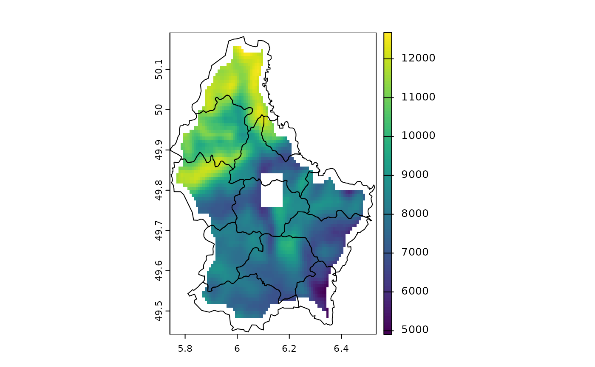
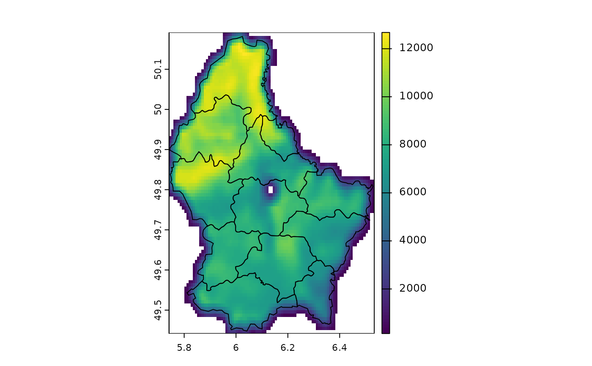
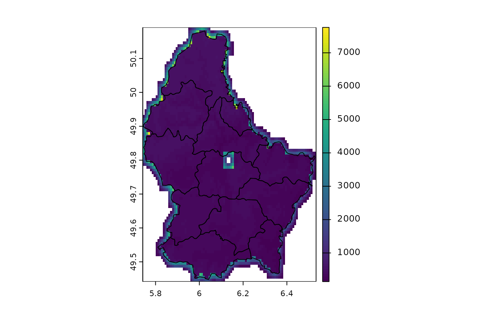
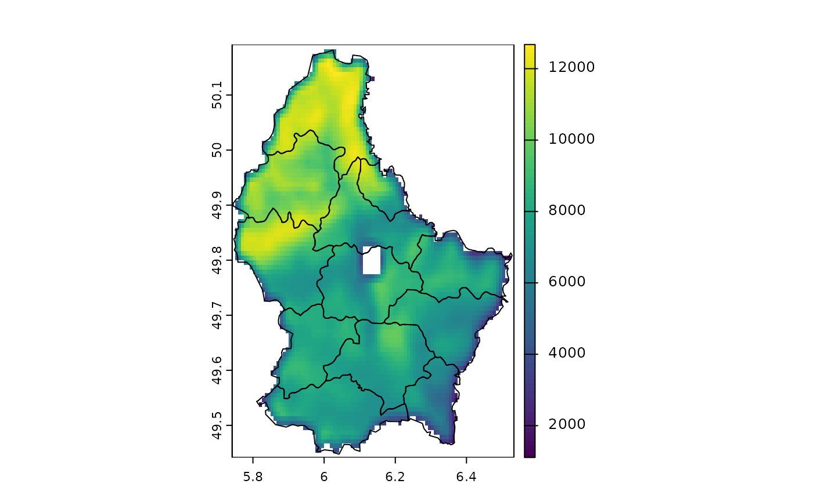

Focal values
focal.RdCalculate focal ("moving window") values for each cell.
Usage
# S4 method for class 'SpatRaster'
focal(x, w=3, fun="sum", ..., na.policy="all", fillvalue=NA,
expand=FALSE, silent=TRUE, filename="", overwrite=FALSE, wopt=list())Arguments
- x
SpatRaster
- w
window. The window can be defined as one (for a square) or two numbers (row, col); or with an odd-sized weights matrix. See Details.
- fun
function that takes multiple numbers, and returns a numeric vector (one or multiple numbers). For example mean, modal, min or max
- ...
additional arguments passed to
funsuch asna.rm- na.policy
character. Can be used to determine the cells of
xfor which focal values should be computed. Must be one of "all" (compute for all cells), "only" (only for cells that areNA) or "omit" (skip cells that areNA). Note that the value of this argument does not affect which cells around each focal cell are included in the computations (usena.rm=TRUEto ignore cells that areNAfor that)- fillvalue
numeric. The value of the cells in the virtual rows and columns outside of the raster
- expand
logical. If
TRUEThe value of the cells in the virtual rows and columns outside of the raster are set to be the same as the value on the border. Only available for "build-in"funs such as mean, sum, min and max- silent
logical. If
TRUEerror messages are printed that may occur when tryingfunto determine the length of the returned value. This can be useful in debugging afunthat does not work- filename
character. Output filename
- overwrite
logical. If
TRUE,filenameis overwritten- wopt
additional arguments for writing files as in
writeRaster
Details
focal
The window used must have odd dimensions. If you need even sides, you can use a matrix and add a column or row of NA's to mask out values.
Window values are typically 1 or NA to indicate whether a value is used or ignored in computations, respectively. NA values in w can be useful for creating non-rectangular (e.g. circular) windows.
A weights matrix of numeric values can also be supplied to w. In the case of a weights matrix, cells with NA weights will be ignored, and the rest of the values in the focal window will be multiplied by the corresponding weight prior to `fun` being applied. Note, na.rm does not need to be TRUE if w contains NA values as these cells are ignored in computations.
The "mean" function is a special case, where supplying weights to w will instead calculate a weighted mean.
The "sum" function returns NA if all focal cells are NA and na.rm=TRUE. R would normally return a zero in these cases. See the difference between focal(x, fun=sum, na.rm=TRUE) and focal(x, fun=\(i) sum(i, na.rm=TRUE))
Example weight matrices
Laplacian filter: filter=matrix(c(0,1,0,1,-4,1,0,1,0), nrow=3)
Sobel filters (for edge detection):
fx=matrix(c(-1,-2,-1,0,0,0,1,2,1), nrow=3)
fy=matrix(c(1,0,-1,2,0,-2,1,0,-1), nrow=3)
Examples
r <- rast(ncols=10, nrows=10, ext(0, 10, 0, 10))
values(r) <- 1:ncell(r)
f <- focal(r, w=3, fun=function(x, ...) quantile(x, c(.25, .5, .75), ...), na.rm=TRUE)
f <- focal(r, w=3, fun="mean")
# the following two statements are equivalent:
a <- focal(r, w=matrix(1/9, nc=3, nr=3))
b <- focal(r, w=3, fun=mean, na.rm=FALSE)
# but this is different
d <- focal(r, w=3, fun=mean, na.rm=TRUE)
## illustrating the effect of different
## combinations of na.rm and na.policy
v <- vect(system.file("ex/lux.shp", package="terra"))
r <- rast(system.file("ex/elev.tif", package="terra"))
r[45:50, 45:50] <- NA
# also try "mean" or "min"
f <- "sum"
# na.rm=FALSE
plot(focal(r, 5, f) , fun=lines(v))

# na.rm=TRUE
plot(focal(r, 5, f, na.rm=TRUE), fun=lines(v))

# only change cells that are NA
plot(focal(r, 5, f, na.policy="only", na.rm=TRUE), fun=lines(v))

# do not change cells that are NA
plot(focal(r, 5, f, na.policy="omit", na.rm=TRUE), fun=lines(v))

# does not do anything
# focal(r, 5, f, na.policy="only", na.rm=FALSE)